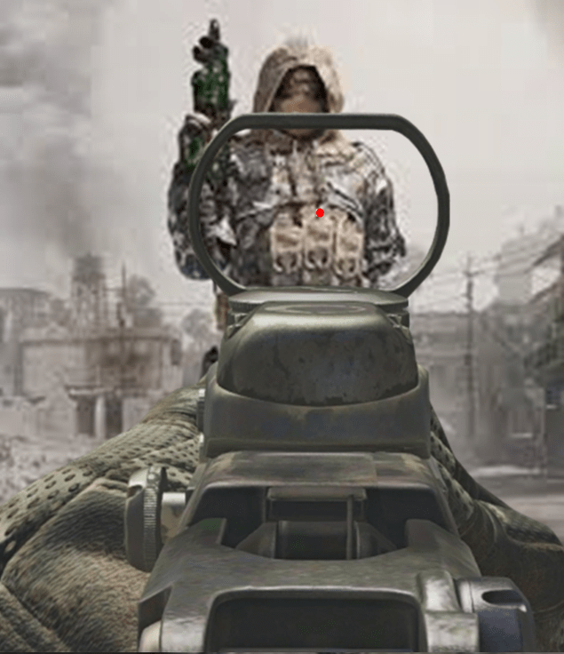

Before Vertical Recoil:
After Vertical Recoil:

Vertical Recoil means the up and down recoil. Easy to control after a bit of practice. It only goes upwards.
Lateral Recoil means the side to side recoil (Horizontal recoil). Harder to control becuse it may go towards the left or the right randomly.

From season 9 each gun has a fixed recoil pattern. Recoil deviation is how much the recoil changes from it's fixed recoil pattern.
When shooting with any type of scopes/sights the reticle moves away from the center in random direction. It is almost impossible to control and can't be seen when using iron sights. It may make you miss easy shots at longer distances. Tap fire to prevent missing shots at longer range with high aim shake weapon. It is called Ads Bullet Spread Accuracy inside the game.
The time taken to open your scope. When you are not ads-ed/completely ads-ed the bullets will travel in random direction and not where you are trying to aim.
The maximum distance you can move in 1 seconds is your movement speed. m/s means meters per second.
The maximum distance you can move in 1 seconds, while ads-ing, is your ads movement speed. Better known by "strafing speed"
The time taken to start shooting from running.
Less Ads Time is good.
Less Vertical Recoil is good.
Less Lateral Recoil is good.
More Movement speed is good.
More Ads Movement speed is good.
More Ammo is good for killing more enemies or missing a few shots.
More Rate of Fire is good if you need to recover from missing a few shots.
Less Time between Shots is good if you need to recover from missing a few shots.
Less Aim Shake is good for hitting shots more often at longer ranges.
Less Sprint to Fire Speed is good for hip-firing.